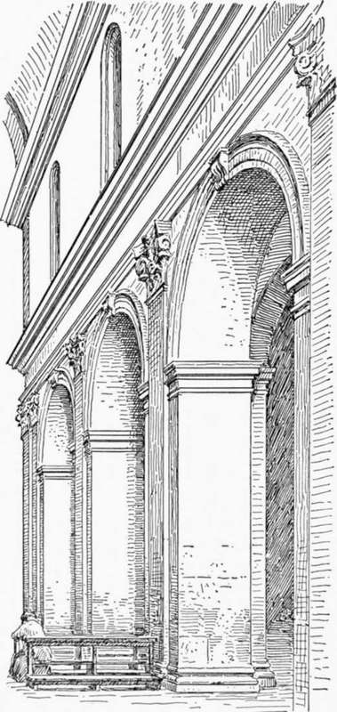
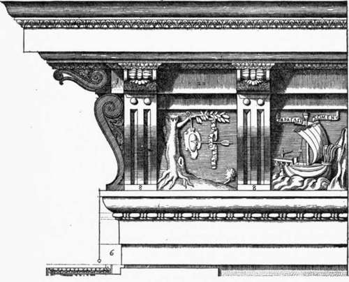
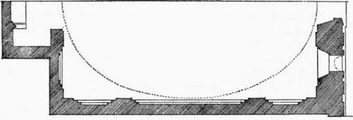
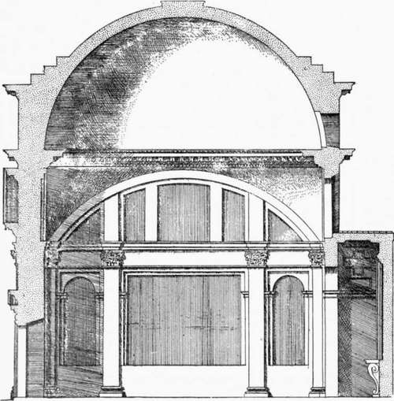
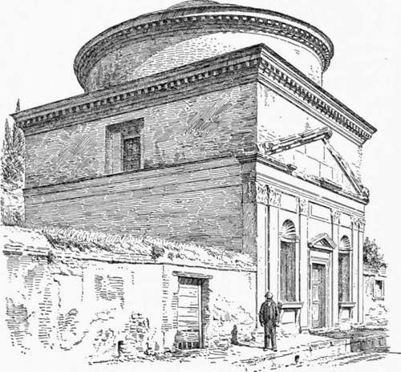

Church Architecture Of The Roman Renaissance. Part 5
Description
This section is from the book "Character Of Renaissance Architecture", by Charles Herbert Moore. Also available from Amazon: Character of Renaissance Architecture.
Church Architecture Of The Roman Renaissance. Part 5
The lantern with which this tower is crowned is an adaptation of Brunelleschi's lantern on the dome of the cathedral, but made more aspiring in form, so that the general outline is like that of a Gothic spire. But the form of a Gothic spire is far removed from anything that is proper to classic composition.
Returning to San Biagio, it may be said that the orders here have a closer conformity with those of classic antiquity than occurs in the earlier monuments already mentioned, except the Tempietto of San Pietro in Montorio by Bramante.
In the nave of the church of Santissima Annunziatta in Arezzo, the same architect produced a different design. The nave (Fig. 42), of only three bays, is covered with a barrel vault, and the aisles have small domes on pendentives. The supporting piers are square with a shallow Corinthian pilaster on the face of each and an entablature passing over the crowns of the arches. The archivolts are deep, and each one is moulded on the face and plain on the soffit. These are carried on plain pilasters with simple impost mouldings. The wall above the entablature is plain and unbroken, except by a round-arched window over each bay of the ground story, and is crowned with a heavy cornice from which the vaulting springs. We have here a structural system of imperial Roman massiveness, necessitated by the use of the great barrel vault.
Fig. 42. —Santissima Annunziatta, Arezzo.
After the early part of the sixteenth century Italy produced few architects of a high order of genius. Most of the more advanced neo-classic art is the work of mediocre men who, while professing to be ardent advocates of grammatical correctness according to the ancient rules, were hardly less capricious in their misuse of classic elements than their predecessors had been. To enter upon the examination of any large number of buildings in this later Renaissance style would be tedious and unnecessary; but in addition to what we have already seen of it in the work of Michael Angelo in St. Peter's, we may give some attention to a few characteristic works of the two leading architects of the later time: Vignola and Palladio.
Few men did more to make the neo-classic ideas authoritative than Giacomo Barrozzi, called Vignola. Beginning like so many others with painting, Vignola was led early to the study of architecture, in which he strove to gain an exact knowledge of classic Roman forms by drawing and measuring the remains of the ancient edifices. He thus became a devoted partisan of the antique, and he wrote a treatise on the Five Orders which has been widely accepted as an authoritative guide in modern architectural practice. To him, says Milizia, " Architecture is under lasting obligations because he established it upon system, and prescribed its rules." 1 And the same author tells us further that Vignola " purified architecture from some abuses which neither his contemporaries nor the ancients had perceived"; yet nevertheless, he adds, " his book has produced more harm than good, for to make the rules more general, and more easy of application, he has altered the finest proportions of the antique." No system of architecture, Milizia says further, " is more easy than that of Vignola, but the facility of it is obtained at the expense of architecture itself."
In his book,2 which is made up largely of drawings and diagrams, Vignola shows how the proportions of an order may be regulated by a module down to the smallest details. He explains how to construct Ionic volutes and other curves from centres, and how to describe the details of Corinthian and composite capitals by means of plan and elevation. He thus introduces a mechanical system modelled after the formulas of Vitruvius.
1 Memorie, etc., vol. 2, p. 36. 2 / Cinque Ordine d' Architettura.
But notwithstanding his ardent advocacy of the principles of ancient Roman art, Vignola, in his own practice, not only altered the proportions of the orders as Milizia says, but made many fanciful changes in them. He introduced details which have no counterparts in correct Roman design, and freely mixed those of different orders. An instance of this occurs in an entablature figured in his book,1 which he calls his own invention. In this composition (Fig. 43) we have a pseudo-Doric frieze between an architrave with multiplied facias, and a cornice on modillions. In the place of triglyphs this frieze has consoles with two channels, like those of a triglyph, on the curved face of each. To such travesties of classic design did the striving after novelty, which was curiously mingled with their ardour for the antique, lead the men of the later Renaissance. For an advocate of classic correctness such aberrations are the more surprising as they are expressly condemned by Vitruvius, who warns his readers against them as follows : " If dentiled cornices are used in the Doric order, triglyphs applied above the voluted Ionic, thus transferring parts to one order which properly belong to another, the eye will be offended, because custom otherwise applies these peculiarities." 1 The Roman writer might, indeed, have given a better reason why the purity of the orders ought to be maintained, namely, because to each of them the fine artistic genius of the Greeks had given its appropriate details.
Fig. 43. — Vignola's entablature.
1 Op. cit., plate 32.
In designing entire buildings Vignola shows no less freedom in unclassic and incongruous combinations. This is manifested in the earliest of his church edifices, that of Sant' Andrea di Ponte Molle outside of the Porta del Popolo at Rome (Figs. 44, 45, and 46). It is a small, oblong, rectangular enclosure covered with a dome of oval plan on pendentives. The structural scheme is thus primarily Byzantine, but the architectural treatment is Roman. The dome is built in a praiseworthy form, and follows the construction of the dome of the Pantheon. An enclosing drum is carried up from the pendentives to a considerable height, and the haunch of the vault is well fortified by stepped rings of masonry. These rings are criticised by Milizia2as awkward and unnecessary because, he affirms, the vault might have been made secure without them. He probably means that it might have been bound with chains in the usual manner of the Renaissance. As in the Pantheon, the drum rises so high above the springing that but little of the dome is visible externally. The character of the rectangular substructure is puzzling to the eye of a beholder who looks for meaning and congruity in architectural forms. Wrought in shallow relief upon its facade is an order we find in the architect's own book the plan and section reproduced in Figs. 44 and 45, which show that the building as it now exists was originally designed in its present form.1
Fig. 44. — Half plan of Sant' Andrea.
1 Bk. 1, chap. 1. 2 Op. cit., vol. 2, p. 30.
Fig. 45.— Longitudinal section of Sant' Andrea, from Vignola's book.
Fig. 46. — Sant' Andrea di Ponte Molle.
Continue to:
- prev: Church Architecture Of The Roman Renaissance. Part 4
- Table of Contents
- next: Church Architecture Of The Roman Renaissance. Part 6